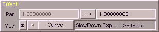

Dieser Bereich dient dem Einstellen von modulierbaren Parameter in SoundFX. In der ersten Zeile
geben sie einen Start- und einen Endwert ein. Mit dem '<->' Knopf können sie die Werte tauschen.
Jetzt noch einige Worte zu den Parametern selber. Seit der Version 3.4 kann man
echte Einheiten in SoundFX verwenden. Das bedeutet, wenn Sie z.B. etwas mit Amplify
doppelt so laut machen wollen, können Sie alle der folgenden Varianten verwenden :
| Beispiel | Beschreibung |
|---|
| 2.0 | Faktor |
| 200 % | absolut, Prozent |
| 2000 %% | absolut, Promille |
| + 100 % | relativ, Prozent |
| + 1000 %% | relativ, Promille |
| + 6 db | relativ, Dezibel |
Sie sehen also - da geht einiges. Hier nun die derzeitig von SoundFX erkannten Einheiten (schreiben
Sie mir wenn Sie welche vermissen) :
| Gruppe | Beschreibung | Format |
|---|
| Amplitude | Faktor | Wert |
| | absolut, Prozent | Wert % |
| | absolut, Promille | Wert %% |
| | relativ, Prozent | +/- Wert % |
| | relativ, Promille | +/- Wert %% |
| | relativ, Dezibel | +/- Wert db |
| | absolut, Pegel | Wert lv |
| relative Frequenz | Faktor | Wert |
| | absolut, Prozent | Wert % |
| | absolut, Promille | Wert %% |
| | relativ, Prozent | +/- Wert % |
| | relativ, Promille | +/- Wert %% |
| | relativ, Semitones | +/- Wert st |
| | relativ, Cents | +/- Wert ct |
| | relativ, Semitones & Cents | +/- Wert:Wert st:ct |
| absolute Frequenz | Herz | Wert hz |
| | Ton | Note -/# Oktave (e.q. C-3, E#2) |
| relative Zeit | Faktor | Zeit |
| | absolut, Prozent | Wert % |
| | absolut, Promille | Wert %% |
| | Wiederholungen | Wert rpts |
| absolute Zeit | Stunde | Wert h |
| | Minute | Wert m |
| | Sekunde | Wert s |
| | Millisekunde | Wert ms |
| | Sekunde & Millisekunde | Wert:Wert s:ms |
| | Minute & Sekunde | Wert:Wert m:s |
| | Stunde & Minute & Sekunde | Wert:Wert:Wert h:m:s |
| | ... ich denke sie haben es kapiert |
| | Samples | Wert sv |
| | Movie(Kino)frames (24 fps) | Wert mf |
| | PAL-Videoframes (25 fps) | Wert pf |
| | NTSC-Videoframes (30 fps) | Wert nf |
| Verhältnis, Anteil | Faktor | Wert |
| | absolut, Prozent | Wert % |
| | absolut, Promille | Wert %% |
| Anzahl | absolut | Wert |
| | relativ | +/- Wert |
| Phase/Winkel | Faktor | Wert |
| | absolut, Prozent | Wert % |
| | absolut, Promille | Wert %% |
| | Grad | Wert ° |
| | Minuten | Wert ' |
| | Sekunden | Wert " |
| | Minuten & Sekunden | Wert:Wert ':" |
| | ... und so weiter |
| | Radian | Wert rad |
| | englische Grad | Wert grd |
Nicht alle dieser Einheiten können für alle Parameter benutzt werden und umgekehrt
können manchmal ungebräuchliche Einheiten verwendet werden. Auf den letzteren Fall
weise ich in den zugehörigen Operatorbescheibungen hin.
Die zeite Zeile : Bei der Programmierung von SoundFX habe ich großen Wert auf hohe Variabilität gelegt.
Parameter sollten frei zugänglich und (wenn gewünscht) komplex veränderbar sein. So kam es zur Entwicklung von 'Blend Shapes'. Dies
sind Kurven die einen Parameter modulieren. Ein 'Blend Shape' gibt immer Werte von 0.0 - 1.0 zurück.
Dadurch kann es den Parameter vom Start- zum Endwert variieren. Der Startwert wird
bei Modulation=0.0 verwendet und der Endwert bei Modulation=1.0.
Folgende Variationsmöglichkeiten gibt es :
| Variante | Beschreibung |
|---|
| None | Diese Shape gibt immer 0.0 zurück - es wird also nichts
geändert. Verwenden Sie diese Variante wenn Sie mit einem
konstanten Wert arbeiten möchten, und tragen Sie diesen im
1. Parameterfeld ein. |
| Curve | gekrümmter Verlauf |
| Cycle | Schwingung |
| Vector | Hüllkurven |
| User | benutzerdefiniert |
Beispiele sagen natürlich mehr als tausend Worte. Darum nachfolgend einige für den Amplify-Operator :
| Beispiel | Beschreibung |
|---|
| 1 | Sie wollen die Lautstärke des gesamten Samples um 5% erhöhen.
Par.0 : 105 % (100%+5%)
Par.1 : egal
Modus : None |
| 2 | Sie wollen die Lautstärke des Samples anfangs um 10 % erhöhen und am
Ende auf 60% bringen. Der Lautstärkeabfall soll immer schneller werden.
Par.0 : 110 % (100%+10%)
Par.1 : 60
Modus : Curve, Exp="2.0" |
| 3 | Sie möchten einen Tremolloeffekt (zyklische Schwankungen der
Lautstärke - "Hubschrauber") erzeugen.
Par.0 : 120 %
Par.1 : 80 %
Modus : Cycle, Sin, Frequency, Frq="1 Hz" |
|